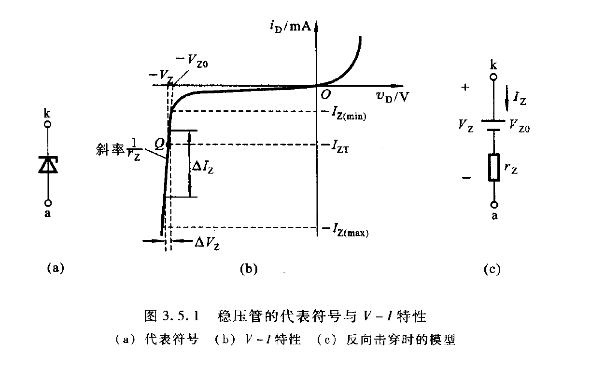

二极管：功能，结构类型，符号， 重点：PN结的结构形成与他的工作原理，伏安特性 二极管的简化模型，如何运用模型分析 齐纳二极管的工作原理
二极管
在PN结上加上引线和封装，就成为一个二极管
二极管的功能
- PN结单向导电性：整流、检波、开关
- PN结压降：温度传感器、参考电压
- 非线性电流-电压特性：调节电压、限制电压、无线电调谐、产生射频振荡、发光
二极管的分类
- 结构：
- 点接触型：结面积小、结电容小、用于检波和变频
- 面接触型：结面积大，用于工频大电流整流电路
- 平面型：往往用于集成电路制造工艺中，面积可大可小
二极管的伏安特性
- 二极管的伏安特性曲线和PN结的伏安特性曲线接近，但是有所变化
- 体电阻的存在，电流比PN结较小一点
- 反向电流大一点
- 但是在NJU的PPT上给出的伏安特性曲线
死区：指的从正向电压0到正向电流开始快速变化的区域
-
硅Si的死区电压：$V_{th} = 0.5-0.8V$
-
锗Ge二极管的死区电压：$V_th = 0.1-0.3V$
-
温度升高，伏安特性曲线正向左移，反向下移(粒子运动加剧，本征激发加强)
-
室温下，上升一度，正向压降2-2.5mv，上升十度，反向电流增大一倍
二极管的主要参数
- 最大整流电流$I_F$: 二极管连续工作时，允许流过的最大整流电流的平均值
- **反向击穿电压$V_{BR}$和最大反向工作电压$V_{RM}$**: 二极管反向电流急剧增加对应的反向电压值为反向击穿电压，为安全，最大反向工作电压为反向击穿电压的一半
- 反向电流$I_R$: 室温下最大反向工作电压的反向电流值。硅二极管一般时纳安级，锗二极管时微安级
- 极间电容$C_d=C_B+C_D$
- **反向恢复时间$T_{RR}$**:从正向偏置的导通状态转为反向偏置状态，需要一定的时间才能变成截止状态。 主要原因时扩散电容的影响
- 正向压降$V_F$：规定正向点留下，二极管的正向电压降
- Si:0.6-0.8V
- Ge:0.2-0.3V
二极管基本电路与分析
图解分析
使用欧姆原理得到的直线与二极管V-I特性曲线的交点
数学上将方程与指数模型联立，使用迭代法求解
简化模型
理想模型
- 近似条件：电源电压远大于电压降
- 正向偏置：管压降为0V
- 反向偏置：电阻无限大
- 理想二极管和实际的二极管的符号差别在于没有中间那条线
- （但是ppt上原本也没有，用涂色表示
恒压降模型
- 管的恒压降恒定：
- 硅管0.7V，锗管0.3V
- 近似条件：$i_D$近似等于或者大于1mA
- 相当于理想模型和一个电压串联
折线模型
$v_D=0.5V$（硅管）
相当于理想二极管、电源、电阻串联
小信号模型
二极管在正向特性的某一小范围内时，正向特性可以等效为一个微变电阻
$r_d = \frac{V_T}{I_D}$，常温下$V_T=26mV$
模型分析法的应用
整流电路
利用二极管的单向导电性
静态工作状态分析
限幅电路
开关电路
判断二极管处于导通还是截止状态，然后观察阳、阴两极之间时正向电压还是反向电压，前者则二极管导通，否则二极管截止
低电压稳压电路
利用二极管的正向压降特性获得较好的稳压性能
- 硅管：0.7V
- 锗管：0.3V
小信号工作情况
齐纳二极管(稳压管)
图中的$V_Z$表示反向击穿电压，即稳压管的稳定电压
作用在于：$\Delta I_Z$ 很大，但是只引起很小的电压变化$\Delta V_z$, 动态电阻越小，稳压管的稳压性能越好
$\alpha$: 温度每变化一度，$U_z$的变化
$$V_Z=V_{Z0}+r_ZI_Z$$
限定工作电流$I_Z(min)<I_Z<I<Z(max)$